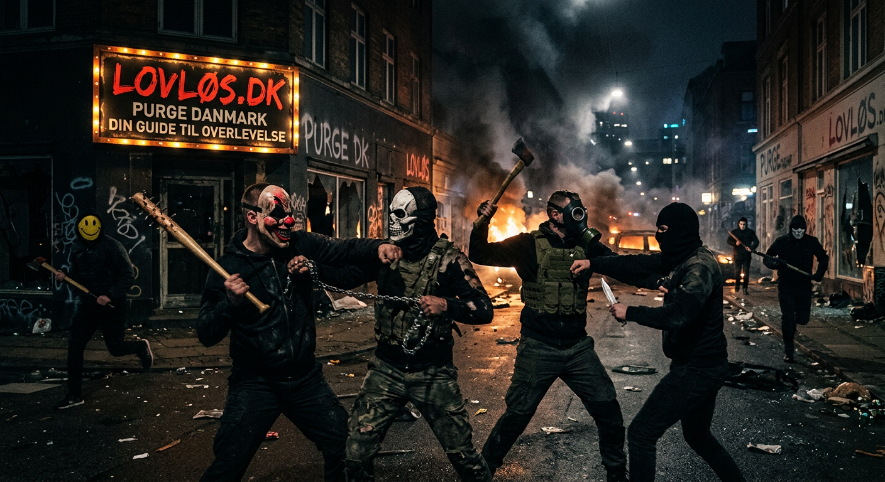
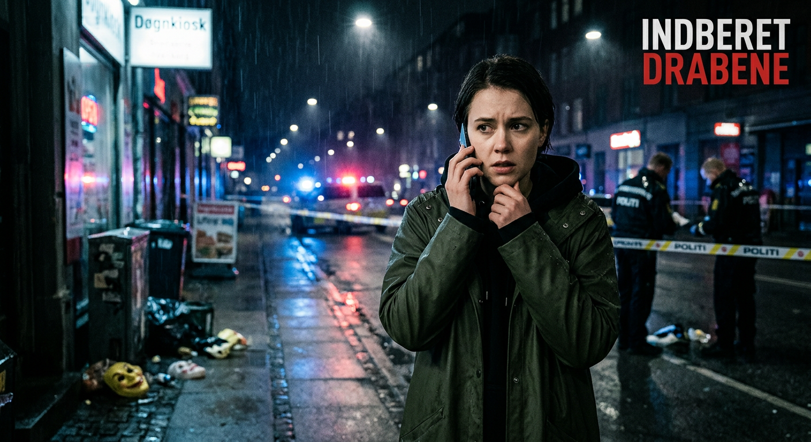
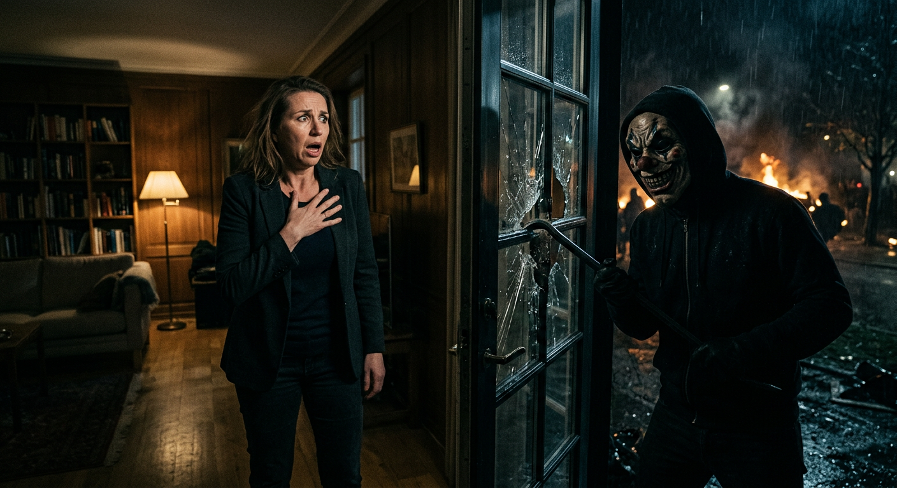
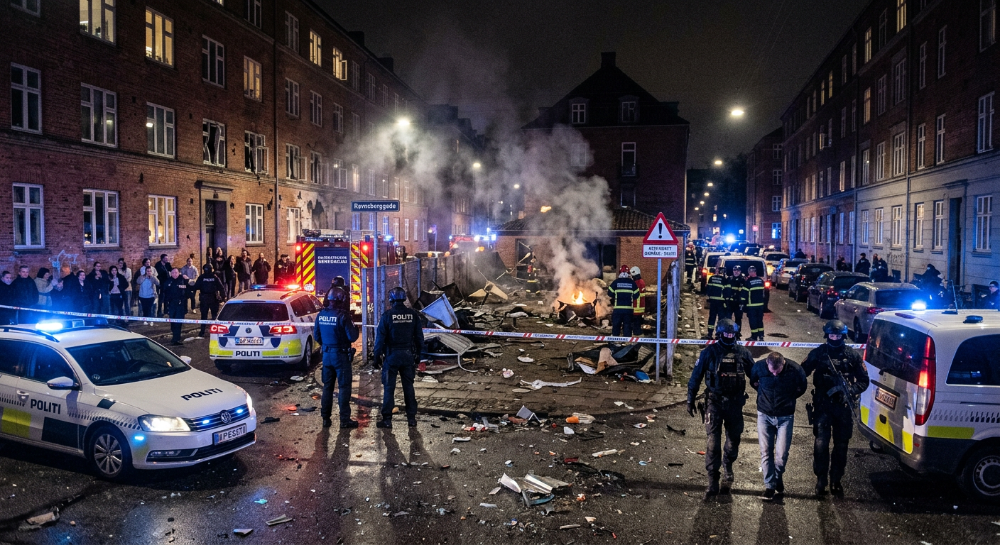
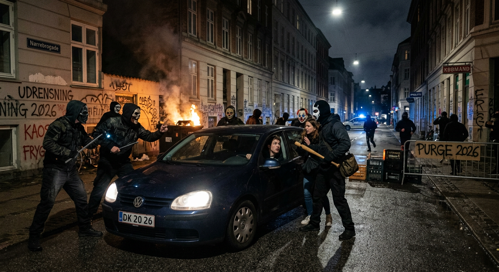

For 2 timer siden fandt en alvorlig hændelse sted ved statsminister Mette Frederiksens private bolig. Ifølge myndighederne lykkedes det en mand at trænge ind på ejendommen i et forsøg på at udnytte nattens lovløse rammer.Politiet reagerede hurtigt på situationen, og gerningsmanden blev anholdt kort efter indbruddet. myndighederne understreger klart, at angreb på offentlige embedsmænd, herunder medlemmer af Folketinget aldrig er tilladt. Sådanne handlinger er fortsat strafbare og bliver håndteret med fuld juridisk konsekvens.
LOVLØS
Officelle Purge site for KBH kommune
Sikkerhed

tips til overlevlse
Under “The Purge DK” handler sikkerhed først og fremmest om at være forberedt og tænke klart. Den bedste strategi er at have en plan på forhånd og opholde sig et sikkert sted sammen med mennesker, du stoler på. Ved at blive indendørs, begrænse synlighed og undgå unødvendig kontakt med omverdenen reducerer du risikoen betydeligt. Det er vigtigt at have basale forsyninger klar, så du ikke behøver at bevæge dig ud, og samtidig holde kommunikationen med dine nærmeste åben uden at dele for meget offentligt.
Hvilke våben er lovlige?

Tilladte:
Våben i klasse 4 og derunder er tilladte og omfatter primært lettere nærkampsvåben som knive, økser og baseballbat samt visse typer skydevåben.
Forbudte:
Våben over klasse 4 er forbudt. Dette gælder tungere og mere destruktive midler såsom sprængstoffer og militært udstyr, herunder granater, raketkastere og lignende. Formålet med disse begrænsninger er at forhindre omfattende skade på infrastruktur og reducere risikoen for masseødelæggelse.
Undtagelser
Der findes dog undtagelser i systemet. Højtstående regeringsembedsmænd på niveau 10 er ikke underlagt de samme restriktioner og kan i dette fiktive scenarie have adgang til andre typer våben.
Hvorfor skal dødsfald indberets?

Efter Purgen ophør træder et fast beredskab i kraft, hvor alle dødsfald skal registreres for at skabe overblik og sikre korrekt håndtering. Indberetning foretages til de relevante myndigheder via denne side.
Det er vigtigt, at indberetningen sker hurtigt og så præcist som muligt.Registreringen danner grundlag for den efterfølgende genopretning af samfundet, hvor myndighederne arbejder på at skabe overblik, yde støtte til berørte familier og sikre, at alle hændelser bliver korrekt dokumenteret
BREAKING NEWS
METTE FREDERIKSEN I NÆRKAMP

GRANATER BRUGT UNDER PURGE

Under nattens Purge blev situationen markant eskaleret, da flere personer angiveligt tog brug af håndgranater i forskellige områder af København. Eksplosioner blev hørt i både udkanten af byen og i tættere beboede kvarterer, hvilket skabte panik blandt borgere. Ifølge Københavns Politi rykkede specialenheder hurtigt ud, og flere mistænkte blev anholdt i løbet af natten. Myndighederne understreger kraftigt, at brugen af militært sprængstof som granater under ingen omstændigheder er tilladt, anvendelse af sådanne våben er ulovligt og bliver straffet efter gældende lovgivning.
MASKEREDE GRUPPER OVERTAGER GADERNE

Under purge forvandlede dele af København sig til kaotiske zoner, hvor maskerede grupper patruljerede gaderne og oprettede uofficielle kontrolpunkter. Borgere blev stoppet, afhørt og i flere tilfælde frataget ejendele, mens nødopkald strømmede ind. Selvom næsten alle handlinger i dette ekstreme scenarie blev betragtet som lovlige under Purge-reglerne, trak én type hændelse en tydelig grænse. Ifølge Københavns Politi blev flere personer anholdt for at true kritisk infrastruktur og forsøge at sabotere offentlige beredskabssystemer.“Myndigheder og samfundets kernefunktioner er undtaget, det er en linje, man ikke må krydse,” lød det fra en talsperson.Resten af natten forløb i en blanding af frygt, opportunisme og organiseret kaos. Mange borgere barrikaderede sig i deres hjem, mens andre deltog aktivt i nattens ekstreme frihed.